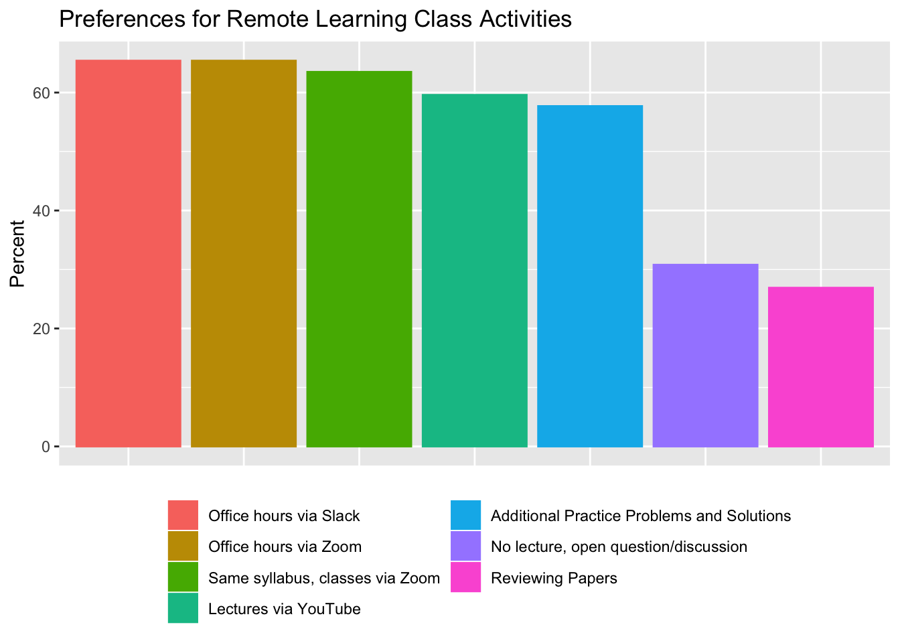
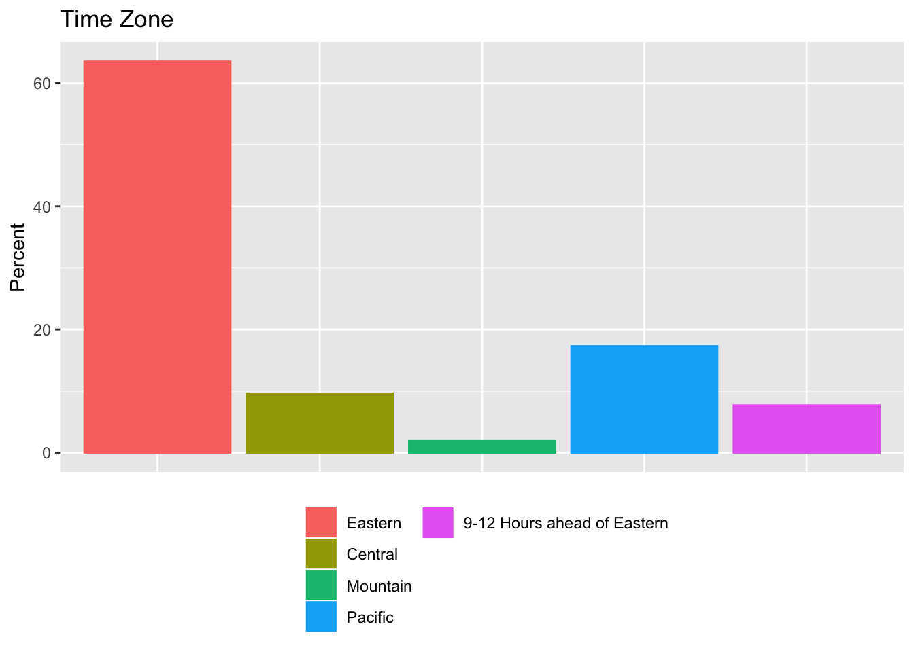

Most of you will remember the survey we did in class the Wednesday before spring break. This was really helpful for me to:
- understand the environment you’ll be learning in for the rest of the semester and
- guide some important decisions for how to structure the class.
Below are some of the results of what you said in that poll and some reflections from me about what that suggests as to how we move forward. Not everything you answered is included, especially things where there was pretty uniform/universal answer (i.e., nearly everyone had a laptop). Instead, I wanted to illustrate to you how I used your information to inform the plan for how to move forward – and for you to know what your classmates are facing in their learning – for the rest of the semester.
#split data
activity_tomerge<-RL_deID %>%
select(ID, classactivities) %>% #Keeping only the ID and classactivities variable
mutate(Q2 = strsplit(classactivities, split = ",\\s?")) %>% #Splitting the multiple options that are separated by commas into multiple variables
unnest() %>%
mutate(Value = 1) %>% #Making the new variable take the value of 1 if someone had checked that box
spread(Q2, Value, fill = 0) %>% #Spreading this back out into columns, filling in with 0s where the option wasn't checked
rename(act_pracprob=`Additional practice problems and solutions`,
act_asnow=`just do the lectures via Zoom`,
act_youtube=`Lectures on YouTube`,
act_discques=`Online discussion and open questions during class time (instead of any lecture during class time)`,
act_papers=`Reviewing papers using these regression models and having online discussions in a discussion forum (Moodle or Slack)`,
act_OHslack=`Scheduled office hour time held via Slack`,
act_OHZoom=`Scheduled office hour time held via Zoom`) %>% #Renaming the variables more consistently
select(ID, starts_with("act_")) # Just keeping the ID and activity variables - this can merge back with other data via the ID
activity_tograph <- activity_tomerge %>%
gather("activity", "type", -ID) %>% #Gather the different activities into rows rather than columns
group_by(activity) %>% # Run the next set of sets within the group of activity
count(type) %>% # Count the 1s (yes/checked) and 0s (no/unchecked)
mutate(total=sum(n)) %>% # Count the total per activity
ungroup() %>% # Stop operating by Activity group
mutate(pct=round((n/total)*100, digits=1)) %>% #Calculate a percentage variable of the % of responses checked for a given activity
filter(type==1) %>% # Only keep the Yes/Checked options (the "no" options are just the inverse percentage (%no = 100 - %yes))
mutate(class_activity=as.factor(if_else(activity=="act_asnow", "Same syllabus, classes via Zoom",
if_else(activity=="act_discques", "No lecture, open question/discussion",
if_else(activity=="act_OHslack", "Office hours via Slack",
if_else(activity=="act_OHZoom", "Office hours via Zoom",
if_else(activity=="act_papers", "Reviewing Papers",
if_else(activity=="act_pracprob", "Additional Practice Problems and Solutions",
if_else(activity=="act_youtube", "Lectures via YouTube", NA_character_ ))))))))
) %>% # Making Activity a factor variable and renaming the variable labels by the activities
select(class_activity,pct) # Keep only the activity name and the percent
activity_plot<- activity_tograph %>%
mutate(class_activity = fct_reorder(class_activity, desc(pct)))%>%
ggplot(aes(y=pct, x=class_activity, fill=class_activity, color=class_activity)) + geom_bar(stat="identity") +
theme(axis.title.x=element_blank(),
axis.text.x=element_blank(),
axis.ticks.x=element_blank(),
legend.position="bottom",
legend.title = element_blank()) + guides(fill=guide_legend(nrow=4)) +
ylab("Percent") + ggtitle("Preferences for Remote Learning Class Activities")
What kinds of activities should we be doing?
activity_plot

From my read of this graph, people would prefer that we:
- Do more or less the same syllabus and schedule, that is
- Delivered via Zoom (and recorded for (re-)watching), with
- Remote office hours (either Zoom and/or Slack).
Where are you all now? And what does that mean for when we should have class via Zoom?
timezone <- RL_deID %>%
mutate(timezone_grp=as.factor(if_else(timezone=="Eastern", "Eastern",
if_else(timezone %in% c("Central", "eastern or central"), "Central",
if_else(timezone=="Mountain", "Mountain",
if_else(timezone %in% c("Pacific", "Either Eastern or Pacific. Waiting to hear if, as a grad student, I will be able to stay or have to go back to Seattle (home).", "I will be in eastern, mountain and pacific through out the semester. going home is complicated but I am willing to wake up early/stay up late for class/studies"), "Pacific",
"9-12 Hours ahead of Eastern"
)))))) %>%
count(timezone_grp) %>% # Count the 1s (yes/checked) and 0s (no/unchecked)
mutate(total=sum(n)) %>% # Count the total per activity
ungroup() %>% # Stop operating by Activity group
mutate(pct=round((n/total)*100, digits=1),
timezone_grp=fct_relevel(timezone_grp, "Eastern", "Central", "Mountain", "Pacific", "9-12 Hours ahead of Eastern"))
timezone_plot <- timezone %>%
ggplot(aes(y=pct, x=timezone_grp, fill=timezone_grp, color=timezone_grp)) + geom_bar(stat="identity") +
theme(axis.title.x=element_blank(),
axis.text.x=element_blank(),
axis.ticks.x=element_blank(),
legend.position="bottom",
legend.title = element_blank()) + guides(fill=guide_legend(nrow=4)) +
ylab("Percent") + ggtitle("Time Zone")
timezone_plot

Most of you are in the U.S., primarily in the East coast/time zone. If we are indeed keeping class in real time, an afternoon class probably still works to accomodate those in the western time zones. For those out of the U.S., the best compromise will be to record lectures and have them posted to Moodle for you to watch. I’ll plan office hours that are more in line with the time differences - either early AM Eastern (~7AM) / afternoon or evening in Asia or later evening (10PM) / morning Asia, at least one of either per week. I’ll make a specific poll to see which of those options you’d prefer – stay tuned.
Time for the course
table(RL_deID$timeforcourse, useNA="always")
##
## 0-2 hours per week less than now
## 11
## 2-5 hours per week less than now
## 4
## 5+ hours per week less than now
## 1
## I'm going to have more time - this might be better
## 6
## I'm going to have the same about of time as I do now
## 28
## <NA>
## 2
timeforclass <- RL_deID %>%
mutate(timecourse_grp=as.factor(if_else(timeforcourse=="I'm going to have the same about of time as I do now", "Same",
if_else(timeforcourse=="0-2 hours per week less than now", "0-2h less",
if_else(timeforcourse=="2-5 hours per week less than now", "2-5h less",
if_else(timeforcourse=="5+ hours per week less than now", "5+h less",
if_else(timeforcourse=="I'm going to have more time - this might be better", "More", NA_character_)))))),
timecourse_grp=fct_explicit_na(timecourse_grp,na_level = "(Missing)")) %>%
count(timecourse_grp) %>% # Count the 1s (yes/checked) and 0s (no/unchecked)
mutate(total=sum(n)) %>% # Count the total per activity
ungroup() %>% # Stop operating by Activity group
mutate(pct=round((n/total)*100, digits=1),
timecourse_grp=fct_explicit_na(timecourse_grp,na_level = "(Missing)"),
timecourse_grp=fct_relevel(timecourse_grp, "More", "Same", "0-2h less", "2-5h less", "5+h less", "(Missing)"))
table(timeforclass$timecourse_grp)
##
## More Same 0-2h less 2-5h less 5+h less (Missing)
## 1 1 1 1 1 1
timeforclass_plot <- timeforclass %>%
ggplot(aes(y=pct, x=timecourse_grp, fill=timecourse_grp, color=timecourse_grp)) + geom_bar(stat="identity") +
theme(axis.title.x=element_blank(),
axis.text.x=element_blank(),
axis.ticks.x=element_blank(),
legend.position="bottom",
legend.title = element_blank()) + guides(fill=guide_legend(nrow=4)) +
ylab("Percent") + ggtitle("Amount of Time to Dedicate to Class")
timeforclass_plot

Most of you expect to have about the same amount of time as you did when you were on campus to dedicate to this class. I fully expect that your responses on Wednesday before spring break may have been optimistic and have changed now a few weeks into this reality. Moreover, about 30% of you thought you would have less time. I think the best approach here is minimal and realistic expectations so that everyone feels set up for success. Practically this means, I’m planning to make less required work and offering more recommended additional problems.
For those who can do more, you’re welcome to - and the sky is the limit there. There are some (12%) who said you might have more time. If you find yourself wanting substantially more work - or a bigger scope of work - there are many possibilities for additional regression modeling work within my own research projects and/or plenty of other data. I will come up with a few ideas of how to structure this and will look for more input from you all soon. If you have thoughts in the meantime, please let me know.